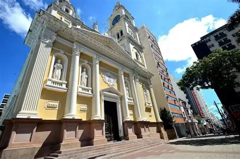
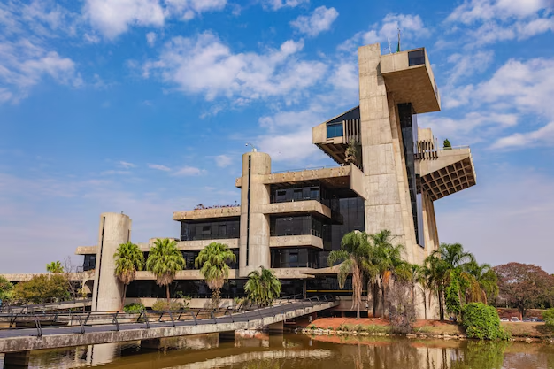

Sorocaba é um dos principais polos do interior paulista, reconhecida por seu desenvolvimento econômico, inovação e qualidade de vida. A cidade se destaca pela forte indústria, universidades, rede de parques urbanos e iniciativas de sustentabilidade.
Parque Zoológico Municipal Quinzinho de Barros – Um dos maiores zoológicos do Brasil e referência em preservação ambiental.
📍 Endereço: R. Teodoro Kaisel, 883 – Vila Hortência, Sorocaba – SP.
Catedral Metropolitana de Sorocaba (Nossa Senhora da Ponte) – Importante marco histórico e religioso da cidade.
📍 Endereço: Praça Cel. Fernando Prestes, s/n – Centro, Sorocaba – SP.
Palácio dos Tropeiros (Paço Municipal) – Sede da Prefeitura e símbolo arquitetônico moderno da cidade.
📍 Endereço: Av. Eng. Carlos Reinaldo Mendes, 3041 – Alto da Boa Vista, Sorocaba – SP.
